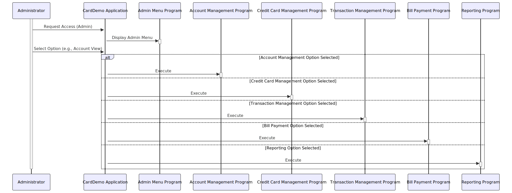

Gerado em: 1 de outubro de 2024
Título do Documento: Aplicativo CardDemo - Especificação das Opções do Menu Administrativo
Descrição Resumida:
O Menu Administrativo do Aplicativo CardDemo fornece uma lista de funcionalidades para gerenciar vários aspectos do sistema de cartão de crédito. Após o login, os administradores podem escolher entre opções como visualizar e atualizar contas, gerenciar detalhes do cartão de crédito, lidar com transações, processar pagamentos de contas e acessar relatórios. Cada opção corresponde a um programa específico dentro do sistema.
Histórias do Usuário:
Como administrador, preciso de acesso a um menu centralizado para gerenciar com eficiência diferentes aspectos do sistema de cartão de crédito, como contas, cartões, transações e relatórios.
Épico Relacionado:
6 - Gerenciamento de Usuários e Segurança
Requisitos Funcionais:
- O Menu Administrativo deve ser acessível apenas após autenticação bem-sucedida do administrador.
- O menu deve exibir uma lista numerada de opções para o administrador.
- Cada opção do menu deve ter uma descrição clara e concisa.
- Selecionar uma opção de menu deve executar o programa ou módulo associado.
- O sistema deve lidar com seleções de menu inválidas normalmente e fornecer feedback apropriado ao usuário.
Requisitos Não Funcionais:
- O Menu Administrativo deve carregar rapidamente e responder prontamente às seleções do usuário.
- A estrutura do menu deve ser fácil de entender e navegar.
- O sistema deve ser projetado para permitir atualizações e modificações fáceis nas opções do Menu Administrativo no futuro.
Critérios de Aceitação:
- Somente administradores autenticados podem acessar o Menu Administrativo.
- O menu exibe todas as opções necessárias com descrições precisas.
- Selecionar uma opção inicia corretamente o programa associado.
- O sistema lida com seleções inválidas e fornece mensagens informativas.
Melhorias de Código:
- Estrutura de Menu Dinâmica: Em vez de codificar opções de menu, implemente uma abordagem orientada a banco de dados. Isso permite atualizações mais fáceis, personalização baseada em funções e potencial para uma estrutura de menu mais dinâmica no futuro.
- Tratamento de Erros Aprimorado: Implemente o tratamento de erros centralizado com registro detalhado para facilitar a solução de problemas. Forneça mensagens de erro amigáveis em vez de códigos de nível de sistema.
- Considere GUI: Se uma GUI for planejada, projete uma interface intuitiva para o Menu Administrativo com dicas visuais claras e navegação fácil.
Melhorias de Segurança:
- Validação de Entrada: Implemente validação de entrada robusta nas seleções de menu para evitar vulnerabilidades de injeção.
- Verificações de Autorização: Antes de executar qualquer programa vinculado a uma opção de menu, verifique as permissões do usuário para essa ação específica.
- Registro: Registre todas as tentativas de acesso e ações realizadas no Menu Administrativo para fins de auditoria.
Diagrama Conceitual:

–Made by “Smart Engineering” (by Compass.UOL)–